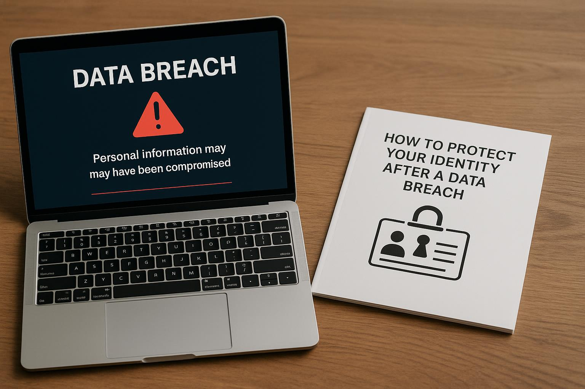

Wynn Resorts Data Breach Overview
Wynn Resorts Confirms Data Breach After Hackers Remove It From Leak Site - SecurityWeek. This announcement has raised significant concerns regarding the security measures in place at one of the world's leading hospitality brands. Recent advancements in cyber threats signal a heightened need for robust data protection strategies to safeguard sensitive customer information.
The Incident: What Happened?
In October 2026, Wynn Resorts reported that the company experienced a significant data breach. The breach was confirmed after hackers removed stolen data from a leak site, suggesting that negotiations may have taken place regarding the stolen information. Details surrounding the breach remain sparse as investigations are ongoing and Wynn Resorts aims to determine the extent of the compromised data.
Speculation points to the possibility that personal information, payment details, and other sensitive data of customers and employees may have been exposed. What’s worrying is the evolving nature of cyber threats and the potential ramifications for individuals affected by this breach.
Why Does This Matter?
Data breaches can have devastating effects on businesses and consumers alike. For organizations, they can lead to financial losses, reputational harm, legal consequences, and regulatory scrutiny. For customers, the exposure of personal information can result in identity theft, financial fraud, and a loss of trust in the affected brand.
As such, Wynn Resorts' confirmation of this breach not only impacts their operations but also sends a broader message about the state of cybersecurity across industries. The incident highlights the importance of vigilance in cybersecurity practices and transparency in communication when breaches occur.
Practical Tips for Protecting Your Data
In light of the recent events surrounding Wynn Resorts, there are proactive steps individuals and companies can take to enhance their cybersecurity posture:
- Update Your Passwords: Regularly change passwords and use unique passwords for different accounts. Consider using a password manager for convenience.
- Enable Two-Factor Authentication: Where available, activate two-factor authentication for an additional layer of security on your accounts.
- Stay Informed: Keep abreast of cybersecurity news and potential threats. Being informed can help you take precautionary measures.
- Monitor Your Accounts: Regularly review bank and credit card statements for any unauthorized transactions and monitor your credit report for unusual activity.
- Educate Yourself and Others: Understanding basic cybersecurity practices can go a long way in protecting sensitive information.
Quick Checklist for Businesses
- Conduct Regular Security Audits: Evaluate your systems frequently to identify weaknesses.
- Train Employees: Educate staff on recognizing phishing attempts and safe data handling practices.
- Implement Data Encryption: Ensure sensitive data is encrypted both in transit and at rest.
- Establish an Incident Response Plan: Have a clear plan in place for how to respond to a data breach, including communication strategies.
- Regularly Update Software: Keep all software up to date to protect against vulnerabilities.

FAQ: Understanding the Breach and Its Impacts
1. What kind of data was compromised in the Wynn Resorts breach?
While specific details are still emerging, it’s reported that personal information, payment details, and possibly sensitive operational data may have been exposed during the breach.
2. How can I protect myself from identity theft after a breach?
Monitor your financial accounts regularly, change passwords, and consider placing fraud alerts or credit freezes on your accounts for added protection.
3. Will Wynn Resorts provide support for affected individuals?
Typically, companies affected by data breaches offer support through credit monitoring services or identity theft protection. It’s advisable to check Wynn Resorts’ official communication for any available resources.
4. What should I do if I receive suspicious communications after the breach?
If you receive any suspicious emails or communications asking for personal information, do not respond. Instead, verify the source directly through official channels to prevent possible phishing attempts.
5. What steps can companies take to prevent future breaches?
Investing in advanced cybersecurity measures, employing regular security assessments, conducting employee training, and having a robust incident response plan are essential strategies for preventing future breaches.
The Broader Context of Data Breaches
The incident at Wynn Resorts is not isolated; data breaches are increasingly common across various industries. Businesses are constantly under threat from cybercriminals, leading to new regulations and standards aimed at protecting consumer information. For those curious about the implications of such breaches across industries, you can read more in articles like 2026: GM sued over pickups, SUVs recalled for engine issues - The Detroit News which discuss how companies are facing legal action due to lax cybersecurity practices.
In conclusion, the confirmation of the data breach at Wynn Resorts is a stark reminder of vulnerabilities in our increasingly digital world. Companies must remain vigilant, while consumers should also be proactive in protecting their data. It’s a collective approach that can help mitigate the impacts of such security incidents.
Next Steps for Affected Customers
If you suspect you might be affected by the Wynn Resorts breach, stay alert and consider utilizing identity management services. Always prioritize your cybersecurity, and remain skeptical of any unsolicited requests for sensitive information.
For those interested in technology advancements in security and other sectors, the latest updates include the expected features of the new iPhone 18 Pro and Pro Max, expected to have upgraded security features that may help increase user defense against breaches.
By staying informed, practicing good security hygiene, and encouraging transparency among businesses, we can collectively create a safer digital environment.
Related on MingMong: 2026: GM sued over pickups, SUVs recalled for engine issues - The Detroit News and iPhone 18 Pro and Pro Max: Leaks reveal camera, colour and design upgrades - Gulf News.
Source: Link